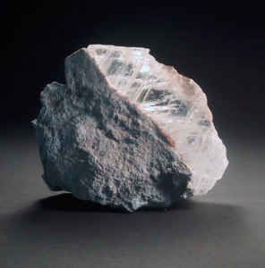
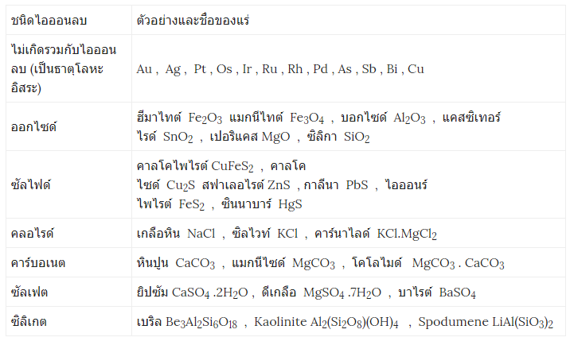
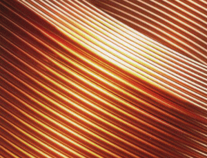
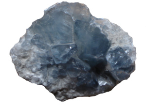
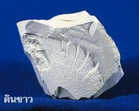
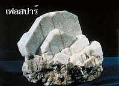

Elements and Compounds
หน้าแรก
เรียนรู้ธาตุและสารประกอบ
ตารางธาตุ
ห้องทดลอง
เกี่ยวกับ
ธาตุและสารประกอบในอุตสาหกรรมเคมี
1.อุตสาหกรรมแร่
แร่ (Mineral) หรือ สารประกอบอนินทรีย์ที่เกิดขึ้นเองตามธรรมชาติ มีโครงสร้างและส่วนประกอบที่แน่นอนมีสมบัติต่าง ๆ เฉพาะตัว หรืออีกความหมายหนึ่ง แร่ คือ วัตถุที่ได้จากพื้นดินเอามาถลุงเป็นโลหะชนิดต่าง ๆ

คือ หิน หรือแร่ประกอบหินซึ่งมีแร่ที่มีคุณค่าทางเศรษฐกิจปริมาณมากพอที่สามารถถลุง ออกมาใช้ประโยชน์ได้ หรืออีกความหมายหนึ่งอาจหมายถึง แร่จากเหมืองที่ยังไม่ถลุง จะเรียกว่า สินแร่
โดยทั่วไปแร่ของโลหะมักเกิดในรูปออกไซด์ ซัลไฟด์ เฮไลด์ ซิลิเกต คาร์บอเนต และซัลเฟต

ทองแดง

เป็นโลหะที่มีความสำคัญและใช้มากในอุตสาหกรรมการผลิตอุปกรณ์ไฟฟ้าและ อิเล็กทรอนิกส์ อุปกรณ์ตู้เย็นและเครื่องปรับอากาศ อุปกรณ์เกี่ยวกับรถยนต์ อาวุธ เปรียญกษาปณ์ ฯลฯ และยังเป็นส่วนปรกอบสำคัญในโลหะผสมหลายชนิด เช่น ทองเหลือง บรอนซ์ โลหะผสมทองแดงนิกเกิลใช้ทำท่อในระบบกลั่น อุปกรณ์ภายในเรือเดินทะเล โลหะผสมทองแดง นิกเกิล และสังกะสี ( เรียกว่าเงินนิกเกิลหรือเงินเยอรมัน ) ใช้ทำเครื่องใช้ เช่น ส้อม มีด เครื่องมือแพทย์ นอกจากนี้ แร่ทองแดงที่มีลวดลายสวยงาม เช่น มาลาไคต์ อะซูไรต์ และคริโซคอลลา สามารถนำมาทำเครื่องประดับได้อีกด้วย
การกลุงแร่ทองแดง
การถลุงทองแดงจากแร่ ขั้นแรกคือการแยกแร่ที่ต้องการออกจากสิ่งเจือปนหรือ กากแร่ อาจใช้วิธีการลอยตัว โดยนำแร่ที่บดละเอียดแล้วผสมเข้ากับน้ำ น้ำมันและสารซักล้างในถังผสม จากนั้นกวนและผ่านอากาศเข้าไปในของเหลวที่อยู่ในถังผสมตลอดเวลา เพื่อทำให้มีฟองเกิดขึ้น ซึ่งเป็นผลให้ฟองอากาศ และน้ำมันไปเกาะอยู่กับอนุภาคของแร่และลอยตัวอยู่ด้านบน ส่วนกากแร่จะจมลงอยู่ด้านล่าง เมื่อตักฟองที่ลอยอยู่ด้านบนออกและทำให้แห้ง จะได้ผลแร่ที่มีปริมาณทองแดงเพิ่มขึ้นประมาณร้อยละ 15 โดยมวล ขั้นต่อไปน้ำแร่มาเผาในอากาศ เรียกกระบวนการนี้ว่า การย่างแร่ ไอร์ออน(II)ซัลเฟตบางส่วนจะถูกออกซิไดส์เป็นไอร์ออน(II)ออกไซด์ ดังสมการ
2CuFeS2(s) + 3O2(g) → 2CuS(s)+ 2FeO(s) + 2SO2(g)
FeO(s) + SiO2(s) → FeSiO3(l)
2Cu2S(s) + 3O2(g) → 2Cu2O(s) + 2SO2(g)
2Cu2S(s) + 3O2(g) → 2Cu2O(s) + 2SO2(g)
กำจัดไอร์ออน(II)ออกไซด์ออกไป โดยนำผลิตภัณฑ์ที่ได้ไปเผารวมกับออกไซด์ของซิลิคอนในเตาถลุงอุณหภูมิประมาณ 1100 °C ไอร์ออน(II)ออกไซด์จะทำปฏิกิริยากับออกไซด์ของซิลิคอนได้กากตะกอนเหลวซึ่ง แยกออกมาได้ ดังสมการ
ส่วนคอบเปอร์(II) ซัลไฟด์เมื่ออยู่ในที่มีอุณหภูมิสูงจะสลายตัวได้เป็นคอบเปอร์(I)ซัลไฟด์ในสถานะของเหลวซึ่งสามารถแยกออกได้
ในขั้นตอนสุดท้ายเมื่อแยกคอปเปอร์(I)ซัลไฟด์ในอากาศ บางส่วนจะเปลี่ยนเป็นคอปเปอร์(I)ออกไซด์ดังสมการ และคอปเปอร์(I)ออกไซด์กับคอปเปอร์(I)ซัลไฟด์ จะทำปฏิกิริยากันโดยมีซัลไฟด์ไอออนทำหน้าที่เป็นตัวรีดิวซ์ ได้โลหะทองแดงและแก๊สซัลเฟอร์ไดออกไซด์ ดังสมการ
ทองแดงที่ถลุงได้ในขั้นนี้ยังมีสิ่งเจือปนจึง ต้องนำไปทำให้บริสุทธิ์ก่อน การทำทองแดงให้บริสุทธิ์โดยทั่วไปจะใช้วิธีแยกสารละลายด้วยกระแสไฟฟ้า
ดีบุก (Sn)

ดีบุกเป็นโลหะสีขาวเป็นเงาคล้ายเงิน มีความถ่วงจำเพาะ 7.3 มีจุดหลอมเหลว 232 0C เป็นโลหะเนื้ออ่อน แต่เหนียว ที่อุณหภูมิ 100 0C สามารถรีดเป็นเส้นได้ แต่ถ้าที่อุณหภูมิ 200 0C ดีบุกจะเปราะ ทุบแตกง่าย ดีบุกมีอันยรูปหลายแบบ เช่น ดีบุกเทา ดีบุกรอมบิก และดีบุกสีขาวแหล่งที่พบ พบในแร่แคสซิเทอร์ไรด์ (SnO2) แร่ดีบุกพบมากทางภาคใต้ นอกจากนั้นยังพบในภาคกลาง และภาคเหนือ แร่ดีบุกพบปนอยู่กับกากแร่อื่น ๆ เช่น อินเมไนต์ เชอร์ดอน โมนาไซด์ โคลัมไบต์ และซิไลต์ การถลุงดีบุก วิธีการถลุงแร่ดีบุก มีขั้นตอนดังนี้ โดยนำสินแร่ดีบุก ( SnO 2 ปนกับทราย SiO 2 เป็นสารปนเปื้อน ) ผสมกับถ่านโค้ก และหินปูนด้วยอัตราส่วน 20 : 4 : 5 โดยมวล ใส่ในเตาถลุงแบบนอน โดยใช้น้ำมันเตา หรือใช้กระแสไฟฟ้าเป็นแหล่งให้ความร้อน
ปฏิกิริยาการแยกดีบุกออกจากแร่ดังนี้
C ( s ) + O2 ( g ) ————> CO2 ( g )
C ( s ) + CO2 ( g ) ———–> 2CO ( g )
2CO ( g ) + SnO2( s ) ———–> Sn ( l ) + 2CO 2 ( g )
ปฏิกิริยาการแยกสารปนเปื้อน ( SiO 2 ) ด้วยหินปูนออก ดังนี้
CaCO3 ( s ) ————-> CaO ( s ) + CO2 ( g )
CaO ( s ) + SnO2 ( l ) ———–> CaSiO3 ( l ) ( ตะกรัน )
2.อุตสาหกรรมเซรามิกส์
ปัจจุบันนี้ เซรามิกส์ หมายถึง ผลิตภัณฑ์ที่ทำจากวัตถุดิบในธรรมชาติ เช่น ดิน หิน ทราย และแร่ธาตุต่างๆ นำมาผสมกัน แล้วทำเป็นสิ่งประดิษฐ์ หลังจากนั้นจึงนำไปเผาเพื่อเปลี่ยนเนื้อวัตถุให้แข็งแรง สามารถคงรูปอยู่ได้
อุตสาหกรรมเซรามิกส์เป็นอุตสาหกรรมที่มีความสำคัญต่อเศรษฐกิจของประเทศ รวมทั้งเป็นอุตสาหกรรมพื้นฐานรองรับอุตสาหกรรมอื่นๆ อีกหลายอย่าง เช่น วัสดุทนไฟเป็นวัสดุพื้นฐานของอุตสหกรรมถลุงและผลิตโลหะ ซีเมนต์เป็นวัสดุสำคัญของงานการก่อสร้างและสถาปัตยกรรม เป็นต้น
กระบวนการผลิตเซรามิกส์มีขั้นตอน ดังนี้
การเตรียมวัตถุดิบ
การขึ้นรูป
การตากแห้ง
การเผาดิบ
การเคลือบ
การเผาเคลือบ
ดิน เป็น วัตถุดิบสำคัญที่ใช้ในการผลิตเซรามิกส์หลายประเภท โดยเฉพาะที่ใช้เป็นภาชนะรองรับอาหาร เครื่องสุขภัณฑ์ กระเบื้อง องค์ประกอบที่สำคัญของดิน คือ SiO2, Al2O3, Fe2O3 CaO MgO K2O และ Na2O ซึ่งดินจากที่ต่างกันจะมีองค์ประกอบในสัดส่วนที่ต่างกันแบ่งดินตามลักษณะทาง กายภาพ จะแบ่งได้ดังนี้ ดินขาว เป็นวัตถุดิบที่สำคัญ ดินขาวบริสุทธิ์ มีสูตรเคมีเป็น Al2O3 (2SiO2.2H2O) ในประเทศไทยพบดินขาวในลักษณะที่เป็นสีขาวหรือสีอ่อนทั้งในสภาพที่ยังไม่ได้ เผาและหลังเผา เช่น ที่จังหวัดลำปาง อุตรดิตถ์ ปราจีนบุรี ระนอง สุราษฎร์ธานี นครศรีธรรมราช
ดินเหนียว มีสีขาวคล้ำจนถึงดำสนิท เนื้อละเอียด เหนียวและแข็งแรงทนทานกว่าดินขาว พบมากที่ ลำปาง เชียงใหม่ ปราจีนบุรี สุราษฎร์ธานีเมื่อนำดินเหนียวผสมกับดินขาว จะทำให้เนื้อดินแน่น และเนียนมากขึ้น สะดวกในการขึ้นรูปและทำเป็นผลิตภัณฑ์

เฟลด์สปาร์ (หินฟันม้า) เป็นสารประกอบอะลูมิโนซิลิเกตของธาตุหมู่ I และ II ส่วนใหญ่มีองค์ประกอบคงที่ ทำหน้าที่ช่วยให้เกิด
การหลอมเหลวที่อุณหภูมิต่ำ ส่งเสริมให้เกิดการเปลี่ยนแปลงเป็นเนื้อแก้ว ทำให้เกิดความโปร่งใสผสมในเนื้อดิน
โซดาเฟลด์สปาร์จะมี Na ในปริมาณมาก จะใช้เป็นส่วนประกอบในน้ำเคลือบและใช้
โซดาเฟลด์สปาร์จะมี Na ในปริมาณมาก จะใช้เป็นส่วนประกอบในน้ำเคลือบและใช้
